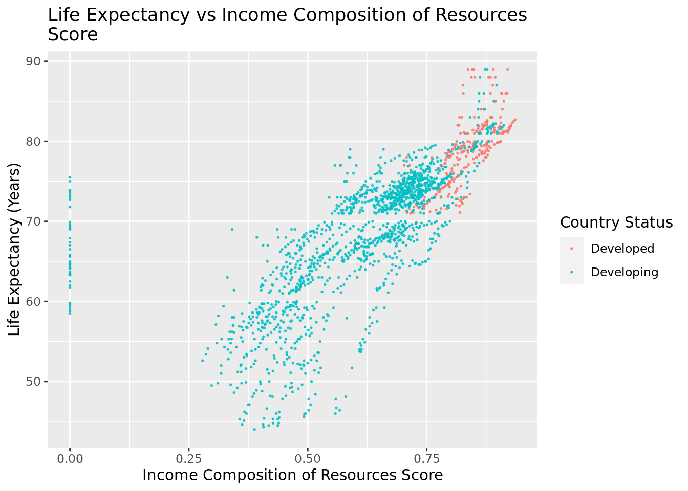
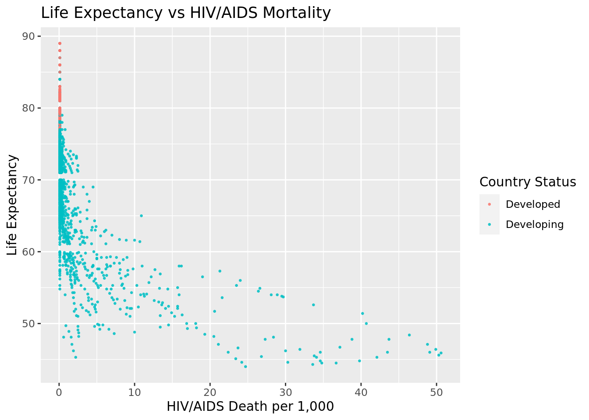
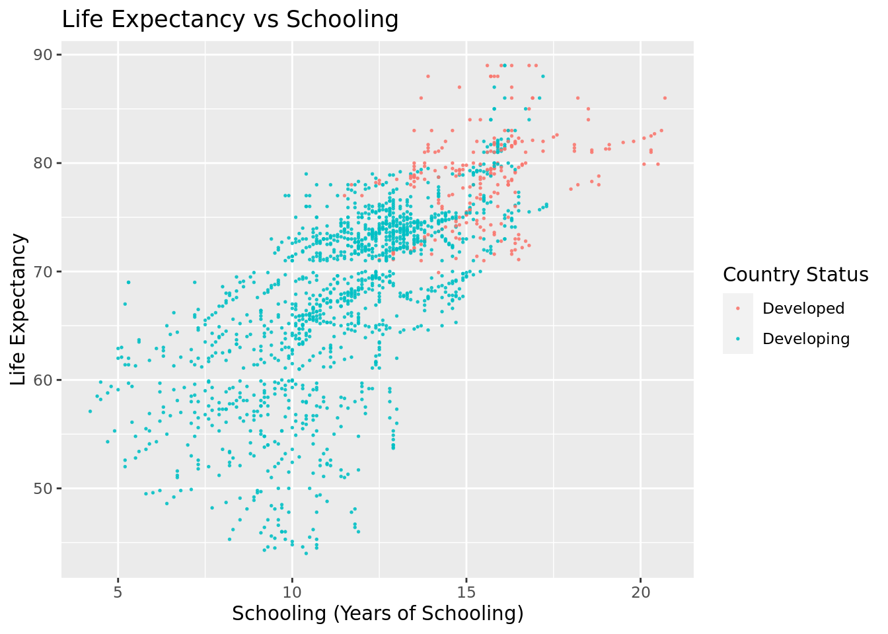

Rows: 1,649
Columns: 22
$ Country <chr> "Afghanistan", "Afghanistan", "Afghani…
$ Year <int> 2015, 2014, 2013, 2012, 2011, 2010, 20…
$ Status <chr> "Developing", "Developing", "Developin…
$ Life.expectancy <dbl> 65.0, 59.9, 59.9, 59.5, 59.2, 58.8, 58…
$ Adult.Mortality <int> 263, 271, 268, 272, 275, 279, 281, 287…
$ infant.deaths <int> 62, 64, 66, 69, 71, 74, 77, 80, 82, 84…
$ Alcohol <dbl> 0.01, 0.01, 0.01, 0.01, 0.01, 0.01, 0.…
$ percentage.expenditure <dbl> 71.279624, 73.523582, 73.219243, 78.18…
$ Hepatitis.B <int> 65, 62, 64, 67, 68, 66, 63, 64, 63, 64…
$ Measles <int> 1154, 492, 430, 2787, 3013, 1989, 2861…
$ BMI <dbl> 19.1, 18.6, 18.1, 17.6, 17.2, 16.7, 16…
$ under.five.deaths <int> 83, 86, 89, 93, 97, 102, 106, 110, 113…
$ Polio <int> 6, 58, 62, 67, 68, 66, 63, 64, 63, 58,…
$ Total.expenditure <dbl> 8.16, 8.18, 8.13, 8.52, 7.87, 9.20, 9.…
$ Diphtheria <int> 65, 62, 64, 67, 68, 66, 63, 64, 63, 58…
$ HIV.AIDS <dbl> 0.1, 0.1, 0.1, 0.1, 0.1, 0.1, 0.1, 0.1…
$ GDP <dbl> 584.25921, 612.69651, 631.74498, 669.9…
$ Population <dbl> 33736494, 327582, 31731688, 3696958, 2…
$ thinness..1.19.years <dbl> 17.2, 17.5, 17.7, 17.9, 18.2, 18.4, 18…
$ thinness.5.9.years <dbl> 17.3, 17.5, 17.7, 18.0, 18.2, 18.4, 18…
$ Income.composition.of.resources <dbl> 0.479, 0.476, 0.470, 0.463, 0.454, 0.4…
$ Schooling <dbl> 10.1, 10.0, 9.9, 9.8, 9.5, 9.2, 8.9, 8…Understanding Life Expectancy and Health Disparities between Developed and Developing Countries
Team 2 Report
Introduction and Data
The dataset is from the World Health Organization and has data on factors that relate to life expectancy, including mortality, immunization, and socioeconomic factors. As stated by the World Health Organization, data is collected through household surveys, civil registrations, and institutional sources such as health facilities. This data is then curated into the Global Health Observatory database. The dataset has data from all countries collected from 2000 to 2015. Each observation is a country’s health status for a given year, and it includes variables such as life expectancy, mortality rates, country development status, schooling, disease rates, and alcohol rates.
We conducted data cleaning by dropping all rows from the dataset that had N/A values. This was done so that the N/A values wouldn’t interfere with our data analysis.
Research Question
Question: Which health and socioeconomic factors most greatly affect the life expectancy of a country, and does this differ between developed and developing countries?
The research topic is life expectancy and the factors that influence it, as well as how these factors differ between countries. Our hypothesis is that developed countries will on average have higher life expectancy than developing countries, and that the factors most correlated with life expectancy are immunization coverage and income composition of resources. There are both categorical and quantitative variables involved in our research topic. Development status is a categorical variable and immunization coverage, income composition of resources, disease rates, mortality rates, and schooling are quantitative variables. Life expectancy is a quantitative variable.
By looking into life expectancy and the factors that underlie it, we hope to better understand the overall health profile of developed and developing countries. Understanding these differences can inform interventions aimed at reducing health inequalities, which governments and international organizations can utilize when shaping effective policies. Additionally, researching the predictors of life expectancy can drive scientific and medical innovation. It can lead to the development of new technologies, treatments, and preventive measures that are tailored to the unique health challenges faced by different populations. Also, knowledge of the predictors of life expectancy can be crucial for crisis preparedness, such as responding to pandemics, natural disasters, or other health emergencies. It allows for targeted and efficient responses to mitigate the impact on vulnerable populations.
Literature
The article from the World Health Organization provides a broad overview about the disparities in life expectancy between different countries. Although life expectancy fluctuated more in the 20th century due to political circumstances, it had largely stabilized (for most countries) by the turn of the 21st century. Globally, the life expectancy for children born in 2015 was 71.4 years. However, for high-income countries, life expectancy is closer to 80 years or more, and for low-income countries, life expectancy is under 60 years. Despite dramatic gains in life expectancy in the last two decades, these major inequalities still persist. This report focuses on access to health services as a major determining factor for a nation’s life expectancy. Complications with pregnancy and childbirth, HIV incidence, malaria outbreak, cardiovascular disease, cancer, lack of clean water, etc. represent just some of these risk factors that stem from or are exacerbated by underlying issues with healthcare infrastructure.
Our research question builds on the WHO article by determining which risk factors have the greatest, most direct impact on life expectancy for different countries. Additionally, the data set includes variables that are not directly mentioned in the article, so bringing more factors to the discussion regarding disparities in life expectancy provides us with a more nuanced outlook on the topic.
[“Life Expectancy Increases by 5 Years, but Inequalities Persist.” World Health Organization, World Health Organization, 19 May 2016, www.who.int/news/item/19-05-2016-life-expectancy-increased-by-5-years-since-2000-but-health-inequalities-persist.]
Ethical Considerations
Additionally, when considering the impact of socioeconomic and health factors on life expectancy across countries, it is crucial to consider ethical considerations of using such a health dataset. Primarily, an ethical concern is that the dataset provides information on sensitive health status of people such as HIV/AIDS status, alcohol consumption, mortality status, and life expectancy. Although the dataset contains sensitive health information, the dataset does not provide any information that would reveal the identity of the people surveyed.
Methodology
Summary Statistics
# A tibble: 17 × 2
name value
<chr> <dbl>
1 cor(Life.expectancy, HIV.AIDS) -0.592
2 cor(Life.expectancy, thinness..1.19.years) -0.458
3 cor(Life.expectancy, thinness.5.9.years) -0.458
4 cor(Life.expectancy, under.five.deaths) -0.192
5 cor(Life.expectancy, infant.deaths) -0.169
6 cor(Life.expectancy, Measles) -0.0689
7 cor(Life.expectancy, Population) -0.0223
8 cor(Life.expectancy, Total.expenditure) 0.175
9 cor(Life.expectancy, Hepatitis.B) 0.200
10 cor(Life.expectancy, Polio) 0.327
11 cor(Life.expectancy, Diphtheria) 0.341
12 cor(Life.expectancy, Alcohol) 0.403
13 cor(Life.expectancy, percentage.expenditure) 0.410
14 cor(Life.expectancy, GDP) 0.441
15 cor(Life.expectancy, BMI) 0.542
16 cor(Life.expectancy, Income.composition.of.resources) 0.721
17 cor(Life.expectancy, Schooling) 0.728 We began by calculating the correlation coefficient between each of the quantitative explanatory variables in the dataset and life expectancy. Correlation coefficient measures the strength and direction of a linear relationship between two variables. By calculating the correlation coefficient, we were able to identify which factors were the most highly associated with life expectancy.
The highest correlated variables are HIV/AIDs, Income Composition of Resources, and Schooling, which have correlation coefficients of -0.59, 0.72, and 0.73, respectively. The HIV/AIDs variable measures the deaths per 1,000 live births due to HIV/AIDS in a given year, the Income Composition of Resources variable is a score between 0 and 1 that measures how well a country utilizes its resources in a given year, and the Schooling variable is the number of years of schooling people in a country have on average in a given year.
Since we found that HIV/AIDs, Income Composition of Resources, and Schooling are the variables that are highest correlated with our response variable of life expectancy, we chose these variables to perform exploratory data analysis on.
Exploratory Data Analysis

ICOR: As shown, there is a positive linear correlation between the ICOR score and life expectancy, and this relationship is true for developing and developed countries. In other words, as the ICOR score increases, the life expectancy increases in a linear manner for both developing and developed countries.

HIV/AIDS: As shown, there is a negative correlation between HIV/AIDS deaths per 1,000 births and life expectancy for developing countries. In other words, as HIV/AIDS deaths decrease, life expectancy increases, The graph also indicates that there is a low HIV/AIDS mortality in developed countries.

Schooling: As shown, there is a positive linear correlation between the years of schooling and life expectancy, and this relationship is true for developing and developed countries. In other words, as the number of years of schooling increases, the life expectancy increases in a linear manner for both developing and developed countries.
Fitting Models
Utilizing the explanatory analysis we conducted, we decided to fit a linear regression model to determine how predictive our selected factors, as well as country development status, were of life expectancy. We chose to fit a linear model based on the largely linear trends we saw between our chosen variables and life expectancy during exploratory data analysis. We fitted an additive model along with an interactive model. The additive model makes the assumption that all the factors have independent effects on life expectancy. For the interactive model, we chose to make the interactive term between Income Composition of Resources and country development status because these two variables are the most closely related to each other out of all the factors, and one is likely to influence the other.
Additive model:
# A tibble: 5 × 5
term estimate std.error statistic p.value
<chr> <dbl> <dbl> <dbl> <dbl>
1 (Intercept) 48.6 0.749 64.9 0
2 Schooling 1.19 0.0629 19.0 7.19e- 73
3 HIV.AIDS -0.631 0.0180 -35.1 4.14e-202
4 Income.composition.of.resources 13.9 0.939 14.8 1.89e- 46
5 StatusDeveloping -1.45 0.347 -4.18 3.09e- 5Interactive model:
# A tibble: 6 × 5
term estimate std.error statistic p.value
<chr> <dbl> <dbl> <dbl> <dbl>
1 (Intercept) 33.1 4.37 7.58 5.95e- 14
2 Schooling 1.16 0.0633 18.4 1.24e- 68
3 HIV.AIDS -0.633 0.0179 -35.3 5.26e-204
4 StatusDeveloping 14.3 4.42 3.24 1.20e- 3
5 Income.composition.of.resources 32.9 5.40 6.10 1.35e- 9
6 StatusDeveloping:Income.composition.of… -19.0 5.31 -3.58 3.49e- 4AIC Scores
Score [1] is the AIC score for the interactive model, and score [2] is the AIC score for the additive model.
[1] 9453.634[1] 9464.471Both the additive and interactive models have similar AIC values. In the additive model, each predictor is added to the model individually, so the coefficient that comes out is the effect measured as if it were independent. The assumption made is that each factor has an independent effect on life expectancy. In the interactive model, there’s an “interaction term”, which examines the combined effect of income composition and a country’s development status on life expectancy. This allows us to measure how the relationship between income composition and life expectancy could be different in developing vs developed countries.
Results
In conclusion, we found that HIV/AIDs, Income Composition of Resources, and Schooling are the factors that have the greatest effect on the average life expectancy for a country in a given year, and this relationship holds true for both developing and developed countries.
We fit both an additive and interactive model to predict the average life expectancy of a country based on its HIV/AIDs deaths per 1,000 live births, Income Composition of Resources, Schooling, and Development Status. For our interactive model, we decided to add an interaction term between Income Composition of Resources and Development Status, because these two variables are likely to influence each other.
We also calculated the AIC scores for each model, which measure how well a given model fits the data with lower scores indicating a more appropriate model. The interactive and additive models have similar AIC values at 9453.634 and 9464.471, respectively. The interactive model has a lower AIC score, indicating that it is a more appropriate model for the data and a slightly better predictor of life expectancy than the additive model.
In the additive model, each predictor is added to the model individually, so the coefficient that comes out is the effect measured as if it were independent. The assumption made is that each factor has an independent effect on life expectancy. In the interactive model, there’s an “interaction term”, which examines the combined effect of income composition and a country’s development status on life expectancy. This allows us to measure how the relationship between income composition and life expectancy could be different in developing vs. developed countries, leading to a better fit model.
Model interpretations
Schooling:
Additive Model: The coefficient of schooling is 1.195, implying that, with all other variables constant, a one-year increase in schooling is correlated with about an increase of 1.195 years of life expectancy.
Interactive model: The coefficient of schooling is 1.1624. Since in this model, schooling is not interacting with any other terms, it follows that the coefficient is similar to the additive model.
HIV/AIDS:
Additive Model: The coefficient for HIV/AIDS is -0.6307, indicating that a unit increase in HIV/AIDS prevalence is associated with a decrease of 0.6307 years in life expectancy.
Interactive model: The coefficient is -0.6327, which is close but slightly more negative. The coefficients are pretty close, indicating the impact HIV/AIDS prevalence has on life expectancy is similar in both models, which follows given it has no additional interaction in this model.
Income Composition of Resources:
Additive Model: The coefficient is 13.8667, meaning for each unit increase in the income composition of resources, life expectancy has a predicted increase of 13.8667 years.
Interactive Model: The coefficient is 32.9267. The much-larger coefficient is part of an interaction term with development status. It indicates that, for example, the benefits of higher income composition are more positive in developing countries.
Development Status:
Additive Model: The coefficient is -1.4515, indicating that being a developing country is associated with a decrease of -1.4515 years of life expectancy. Essentially, developing countries have slightly lower life expectancy than developed countries.
Interactive Model: The coefficient is 14.3391, meaning being a developing country is linked to an increase of life expectancy by 14.3391 years. The implication of the difference is that the disadvantage of development status is complex and varies based on income composition. High income composition can either mitigate or reverse the negative impact of being a developing country.
Scope of inference
Since the World Health Organization life expectancy data was collected through observation, we can only conclude an associative relationship between HIV/AIDs, Income Composition of Resources, Schooling, and Development Status on life expectancy. We cannot conclude that these factors are causal.
Discussion
Through the course of this project, we’ve learned a lot about the factors that affect impact life expectancy, and how those trends differ between developing and developed countries. Some country factors, like schooling or HIV/AIDS prevalence, appear to have clearer positive or negative associations with life expectancy regardless of country status. However, other factors, such as the income composition of resources score, seem to be more greatly correlated with life expectancy for developing than developed countries. Although our limited scope of inference means that we cannot conclude the causation of any of these variables with life expectancy, it does provide some insight into possible avenues for improving population health that require further research and more robust statistical analysis. This can then better inform government policy making and procedures.